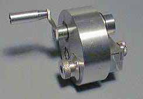
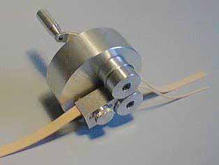

| 
 |
This Rubber Stripper was formerly made by Charles Leeson of Australia. The front knob (fine thread) is the one used for changing the width of the feed (rubber) and there is another knob in the back near the handle (visible in the lower photo) is to get the desired final width of the stripped rubber.
Update: September 2016 |
|---|---|
|
Dropping it on the hard floor could be a real bother. To prevent this from happening, I always set mine down in its storage box, a small cardboard box filled with short ends and scraps of rubber. It remains well protected, is always where I think it is, and never rolls off the table.
Come to think of it, maybe the shape is a good thing! Thayer | |
Copyright 1998-2016, Thayer Syme. All rights reserved